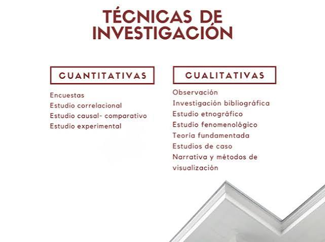
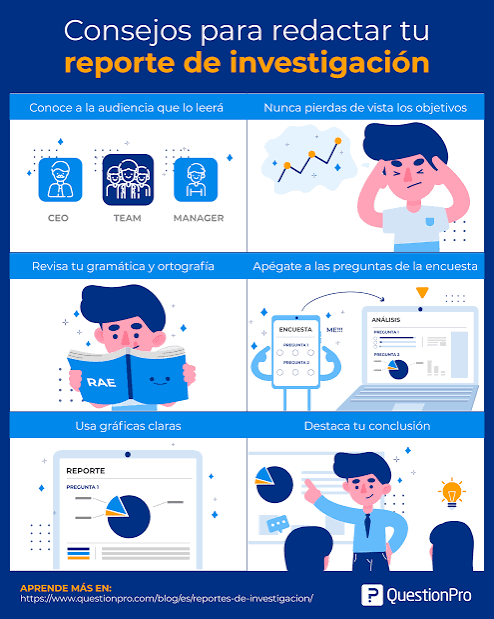
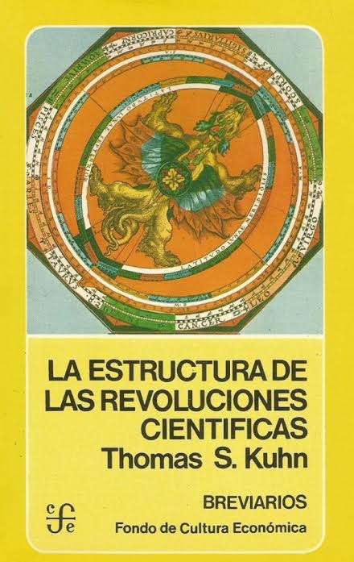
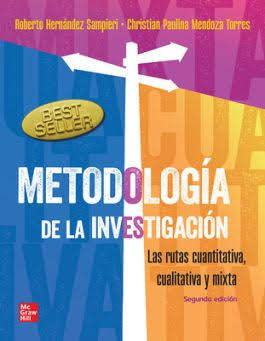
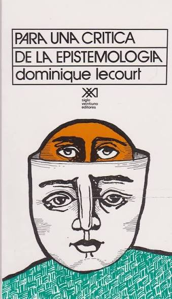
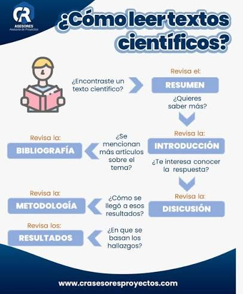
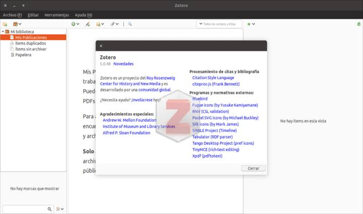
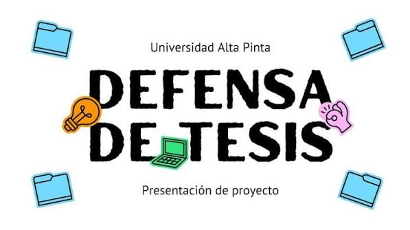

Metodología de Investigación
Fundamentos y tecnicas para la investigación academica de posgrado
Ver curso
Posgrado-Biblioteca Digital
Fundamentos y tecnicas para la investigación academica de posgrado
Ver curso
Modelos estadísticos rultivariados y análisis de datos complejos
Ver curso
Estretegias para redactar altículos, tesis y reportes cientificos
Ver cursoKuhn, T. (1962) La estructura de las revoluciones científicas
Ver curso
Hernández, Sampieri.Metodología de la investigación
Ver curso
F1 oficina del cientificos de la ciencia de reflectividad
Ver curso
Guia paso a paso para revisar literatura acádemica eficientemente
Ver curso
Tutorial conmpleto para realizar bibliografía y notas de lectura
Ver curso
Consejos prácticos para preparar y presentar la defensa doctoral
Ver curso